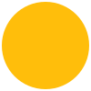
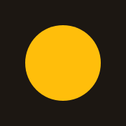

Designguide
Tidya designspråk
Et varmt grensesnitt bygget på amber og brune toner. Mørk og lys modus, tekst kontrastsjekket mot WCAG AA (4,5:1) og kontroller mot 3:1.
Farger
Mørk modus er standard, lys følger OS eller data-theme="light". Kontrast er mot --color-bg (mørk / lys). Kilde: tokens.css.
- bg
- surface
- accent-fill
- accent
- text
- label
| Token | Mørk | Lys | Bruk |
|---|---|---|---|
--color-bg | #1a1816 | #fbf6ea | Sidebakgrunn |
--color-surface | #272422 | #f3e9d3 | Kort, dialog |
--color-text | #f5efe6 | #1c1712 | Primærtekst · 15,5:1 / 16,5:1 |
--color-text-secondary | #d4a88f | #7a4a2e | Støttetekst · 8,3:1 / 6,8:1 |
--color-text-muted | rgba(245, 239, 230, 0.55) | rgba(28, 23, 18, 0.65) | Metadata, placeholder · 5,5:1 / 5,3:1 |
--color-label | #e0956d | #9c3d1a | Etiketter · 7,3:1 / 6,3:1 |
--color-accent | #ffbe0b | #8a5d00 | Aksenttekst, lenke, kant på fokusert felt · 10,7:1 / 5,3:1 |
--color-accent-hover | #ffc933 | #6b4900 | Hover på aksenttekst · 11,5:1 / 7,6:1 |
--color-accent-fill | #ffbe0b | #ffbe0b | Flater: primærknapp, markeringer |
--color-accent-fill-hover | #ffc933 | #f0a800 | Hover på flater |
--color-on-accent | #1c1712 | #1c1712 | Tekst på aksentflate · 10,7:1 / 10,7:1 |
--color-link | = --color-accent | = --color-accent | Lenker (alias, alltid understreket) |
--color-error | #ff5c5c | #c82020 | Feil, slett · 5,9:1 / 5,3:1 |
--color-success | #4cc38a | #17703f | Suksess · 8,0:1 / 5,7:1 |
--color-warning | #ff9f43 | #9a4d00 | Advarsel · 8,7:1 / 5,7:1 |
--color-info | #6cb6ff | #1a5a9e | Informasjon · 8,2:1 / 6,5:1 |
--color-*-bg | rgba(farge,.12) | rgba(farge,.08–.10) | Bakgrunn i meldinger (error, success, warning, info) |
--color-border | rgba(255, 255, 255, 0.06) | rgba(28, 23, 18, 0.10) | Kortkanter (dekorativ) |
--color-border-subtle | rgba(255, 255, 255, 0.10) | rgba(28, 23, 18, 0.16) | Skiller (dekorativ). Ikke på inputs |
--color-border-control | rgba(255, 255, 255, 0.34) | rgba(28, 23, 18, 0.49) | Inputs og kontroller · min. 3:1 |
--color-accent-border | rgba(255, 190, 11, 0.46) | rgba(138, 93, 0, 0.76) | Ghost-knapp, drop-sone · min. 3:1 |
--color-accent-bg-subtle | rgba(255, 190, 11, 0.05) | rgba(255, 190, 11, 0.12) | Hover-bakgrunn |
--color-focus-halo | rgba(255, 190, 11, 0.18) | rgba(255, 190, 11, 0.45) | Glød rundt fokusert felt |
--color-overlay | rgba(0, 0, 0, 0.60) | rgba(28, 23, 18, 0.45) | Bakgrunn bak dialog |
Typografi
2xl med tabular-numsGrunnlag
Avstand
--space-14px--space-28px--space-312px--space-416px--space-524px--space-632px--space-748pxRadius
Kanter
Kanter som markerer et UI-element (input, ghost-knapp, drop-sone) har minst 3:1 (WCAG 1.4.11). Dekorative kanter er unntatt.
Dybde
Flater skilles med --color-surface og kant. Skygge kun på flytende elementer. Native <dialog> og popover ligger i nettleserens top layer, så det trengs ingen z-index-skala.
Bevegelse
Med prefers-reduced-motion: reduce slås alle overganger av.
Logo
Ordmerket Tidya med gul prikk (--color-accent-fill). To varianter: mørk logo på lys bakgrunn og lys logo på mørk bakgrunn. Minstehøyde 24 px, frirom minst prikkens diameter på alle sider. Ikke strekk, farge om eller legg på bilder. Filene ligger i brand/.
Vil du ha en logo som bytter selv når modus skifter, bruk .logo med begge bildene. Prøv tema-knappen øverst.
<div class="logo">
<img class="logo-for-dark" src="brand/logo-mork-bakgrunn.svg" alt="Tidya" height="32">
<img class="logo-for-light" src="brand/logo-lys-bakgrunn.svg" alt="Tidya" height="32">
</div>
<img src="brand/logo-lys-bakgrunn.svg" alt="Tidya" height="32"> <!-- på lys bakgrunn -->
<img src="brand/logo-mork-bakgrunn.svg" alt="Tidya" height="32"> <!-- på mørk bakgrunn -->Fav-ikon
Fav-ikonet er det lille bildet i nettleserfanen, bokmerker og historikk. Her er det bare prikken, fordi hele logoen blir uleselig i 16 px. Tre filer dekker alle enheter. Hver app må lenke til dem i <head>, ellers vises ingen ikon. Denne siden bruker de samme filene, så du ser dem i fanen din nå.

Tidya designspråkfavicon.svgFanen i moderne nettlesere. Skarp i alle størrelser.favicon.icoFallback for eldre nettlesere og verktøy (16, 32 og 48 px).
apple-touch-icon.pngNår noen legger siden på hjemmeskjermen på iPhone (180 × 180 px, mørk bakgrunn, iOS runder hjørnene).<link rel="icon" href="brand/favicon.ico" sizes="32x32">
<link rel="icon" href="brand/favicon.svg" type="image/svg+xml">
<link rel="apple-touch-icon" href="brand/apple-touch-icon.png">Knapper og tilstander
Header og temabryter
Headeren øverst på denne siden er komponenten. Den er position: fixed, gjennomsiktig i toppen og tåkete med bunnlinje etter scroll. Under 720 px blir menyen en nedtrekksmeny. header.js tar scroll, meny og tema (husker valget i localStorage med nøkkelen i data-theme-key). Prøv den på smal skjerm, og bytt modus med knappen.
Menyen er <a> for sider (aria-current="page" på den aktive) og .link-button for handlinger som skal se ut som lenker. Utenfor menyen er .link-button en vanlig understreket lenke: . Ikke bruk btn-* i headeren. Gi første innhold .site-header-offset, siden headeren ikke tar plass i flyten. Bredden er 860 px; sett --site-width på .site-header-inner for bredere sider.
<header class="site-header">
<div class="site-header-inner">
<a class="site-brand" href="./">
<span class="logo">
<img class="logo-for-dark" src="brand/logo-mork-bakgrunn.svg" alt="Tidya" height="32">
<img class="logo-for-light" src="brand/logo-lys-bakgrunn.svg" alt="Tidya" height="32">
</span>
</a>
<div class="site-header-actions">
<nav class="site-nav" id="site-nav" aria-label="Hovedmeny">
<a href="/kunder" aria-current="page">Kunder</a>
<a href="/innstillinger">Innstillinger</a>
<button class="link-button" type="button">Logg ut</button>
</nav>
<button class="theme-toggle" type="button" data-theme-toggle data-theme-key="tidya-theme" aria-label="Bytt til lys modus">
<svg class="icon-sun" width="20" height="20" viewBox="0 0 24 24" fill="none" stroke="currentColor" stroke-width="2" stroke-linecap="round" stroke-linejoin="round" aria-hidden="true"><circle cx="12" cy="12" r="4"/><path d="M12 2v2M12 20v2M4.93 4.93l1.41 1.41M17.66 17.66l1.41 1.41M2 12h2M20 12h2M6.34 17.66l-1.41 1.41M19.07 4.93l-1.41 1.41"/></svg>
<svg class="icon-moon" width="20" height="20" viewBox="0 0 24 24" fill="none" stroke="currentColor" stroke-width="2" stroke-linecap="round" stroke-linejoin="round" aria-hidden="true"><path d="M20 14.5A8 8 0 1 1 9.5 4a6.5 6.5 0 0 0 10.5 10.5Z"/></svg>
</button>
<button class="site-nav-toggle" type="button" data-nav-toggle aria-label="Åpne meny" aria-expanded="false" aria-controls="site-nav">
<svg class="icon-menu" width="22" height="22" viewBox="0 0 24 24" fill="none" stroke="currentColor" stroke-width="2" stroke-linecap="round" stroke-linejoin="round" aria-hidden="true"><path d="M4 6h16M4 12h16M4 18h16"/></svg>
<svg class="icon-close" width="22" height="22" viewBox="0 0 24 24" fill="none" stroke="currentColor" stroke-width="2" stroke-linecap="round" stroke-linejoin="round" aria-hidden="true"><path d="M6 6l12 12M18 6L6 18"/></svg>
</button>
</div>
</div>
</header>
<script src="header.js"></script>Skjema
Hvert felt har synlig label, valgfri hint og feilmelding knyttet med aria-describedby. Feil settes med aria-invalid="true", ikke en egen klasse.
Vises i oversikten.
Ugyldig e-postadresse.
<div class="field">
<label class="label" for="navn">Navn</label>
<input class="input" id="navn" name="navn" type="text" aria-invalid="true" aria-describedby="navn-feil">
<p class="field-error" id="navn-feil">Navn må fylles ut.</p>
</div>Tabell
Tall høyrejustert med tabular-nums (klassen num). Sorterbare kolonner er vanlige lenker i th med aria-sort. Tom tilstand bruker table-empty. Rammen table-wrap scroller sidelengs på smal skjerm, så den har tabindex="0", role="region" og aria-label (tastaturtilgang). Navnet må være unikt på siden, ikke det samme som seksjonens overskrift.
| Navn | Status | Beløp |
|---|---|---|
| Prosjekt A | Aktiv | 1 234,50 kr |
| Prosjekt B | Pauset | 98 000,00 kr |
| Prosjekt C | Avsluttet | −12 500,00 kr |
| Ingen prosjekter ennå. Legg til det første. |
<div class="table-wrap" tabindex="0" role="region" aria-label="Prosjekter">
<table class="table">
<caption class="sr-only">Prosjekter</caption>
<thead><tr>
<th scope="col" aria-sort="ascending"><a href="?sort=navn&dir=desc">Navn</a></th>
<th scope="col" class="num">Beløp</th>
</tr></thead>
<tbody>
<tr><td>Prosjekt A</td><td class="num">1 234,50 kr</td></tr>
</tbody>
</table>
</div>Kort, meldinger og dialog
Korttittel
Kort grupperer relatert innhold på en flate (--color-surface) med svak kant og 10px radius.
Kortvarianter
Grunnkortet card er flatt og brukes også i skjema. card-accent gir en amber tone og er det som gir variasjon i en gruppe. card-link (på <a>) løfter seg og får skygge, og bare det kortet beveger seg ved hover. card-stat er et nøkkeltall, card-wave legger en bølge nederst, og card-feature er romsligere med card-icon. Overskrifter i kortene er .h3, så editorial gir dem Fraunces.
Fremhevet kort
Amber tone gir variasjon. Bruk det på ett kort i en gruppe.
Vanlig kort
Flatt og rolig. Samme kort brukes i skjema.
96%
til partneren
Du gjør jobben. Du beholder nesten alt.
I en section-alt
Flaten bak er --color-surface, og kortene snur til --color-bg.
Alternerer
Ingen ekstra klasser på kortene.
<div class="card-grid">
<div class="card card-accent card-feature">
<div class="card-icon"><svg width="24" height="24" viewBox="0 0 24 24" fill="none" stroke="currentColor" stroke-width="2" stroke-linecap="round" stroke-linejoin="round" aria-hidden="true"><path d="M2 12h4l3-9 4 18 3-9h6"/></svg></div>
<h3 class="h3">Fremhevet kort</h3>
<p class="card-body">Amber tone gir variasjon. Bruk det på ett kort i en gruppe.</p>
</div>
<div class="card card-feature">
<div class="card-icon"><svg width="24" height="24" viewBox="0 0 24 24" fill="none" stroke="currentColor" stroke-width="2" stroke-linecap="round" stroke-linejoin="round" aria-hidden="true"><circle cx="12" cy="12" r="10"/><path d="M12 8v4l2.5 2.5"/></svg></div>
<h3 class="h3">Vanlig kort</h3>
<p class="card-body">Flatt og rolig. Samme kort brukes i skjema.</p>
</div>
<div class="card card-stat">
<p class="card-stat-number">96<span class="card-stat-unit">%</span></p>
<p class="h3">til partneren</p>
<p class="card-body">Du gjør jobben. Du beholder nesten alt.</p>
</div>
</div>
<div class="card-grid">
<a class="card card-accent card-link card-wave" href="#kort">
<span class="card-tag">For partnere</span>
<h3 class="h3">Lenkekort med bølge</h3>
<p class="card-body">Hele kortet er en lenke. Det løfter seg ved hover, og pilen glir.</p>
<span class="card-more">Les mer <span class="card-arrow" aria-hidden="true">→</span></span>
</a>
<a class="card card-link card-wave" href="#kort">
<span class="card-tag">For kunder</span>
<h3 class="h3">Samme uten tone</h3>
<p class="card-body">Uten <code>card-accent</code>. Alterneringen mellom to kort ligger i den ene klassen.</p>
<span class="card-more">Les mer <span class="card-arrow" aria-hidden="true">→</span></span>
</a>
</div>
<!-- section-alt gir flate bak kortene, som snus til --color-bg automatisk -->
<section class="section-alt"><div class="card-grid">…</div></section>
<!-- redaksjonell modus: Fraunces på .h1–.h3, .display og tall i kort -->
<main class="editorial">…</main>Sitatblokk for å løfte frem en viktig setning.
— Kilde
Status vises med ikon og tekst, ikke farge alene. Tittel er --color-text, brødtekst --color-text-secondary. Fargen ligger på kant og ikon.
Informasjon
Nøytral beskjed som ikke krever handling.
Lagret
Endringene er lagret.
Vær oppmerksom
Noe bør sjekkes før du går videre.
Noe gikk galt
Handlingen kunne ikke fullføres. Prøv igjen.
Dialog
Native <dialog> med showModal(): fokusfelle, Escape og bakgrunn uten JS-bibliotek. autofocus på den trygge knappen. Escape lukker, og fokus går tilbake til knappen som åpnet den.
<button class="btn-ghost" type="button" onclick="document.getElementById('slett').showModal()">Slett kunde…</button>
<dialog class="dialog" id="slett" aria-labelledby="slett-tittel" aria-describedby="slett-tekst">
<h2 class="dialog-title" id="slett-tittel">Slett Prosjekt A?</h2>
<p class="dialog-body" id="slett-tekst">Dette kan ikke angres.</p>
<form class="dialog-actions" method="dialog">
<button class="btn-ghost" value="avbryt" autofocus>Avbryt</button>
<button class="btn-danger" value="slett">Slett</button>
</form>
</dialog>Skjema i dialog
Feltene ligger i et form med stack (jevn avstand), dialog-actions nederst og autofocus på første felt. Avbryt har formnovalidate, så den alltid lukker.
<dialog class="dialog" id="ny-kunde" aria-labelledby="ny-kunde-tittel">
<h2 class="dialog-title" id="ny-kunde-tittel">Ny kunde</h2>
<form class="stack" method="dialog">
<div class="field">
<label class="label" for="navn">Navn</label>
<input class="input" id="navn" name="navn" type="text" autofocus>
</div>
<div class="dialog-actions">
<button class="btn-ghost" value="avbryt" formnovalidate>Avbryt</button>
<button class="btn-primary" value="lagre">Legg til kunde</button>
</div>
</form>
</dialog>htmx-mønstre
Komponentene er ren CSS og fungerer rett i server-rendret HTML. Mønstrene holder innholdet tilgjengelig når det byttes ut.
- Validering: serveren returnerer hele skjemaet på nytt med
aria-invalid, feilmelding ogautofocuspå første ugyldige felt, så fokus ikke går tapt. - Lasting:
.spinneri.htmx-indicator. Skjemaet fårhtmx-request, og submit-knappen blokkeres (hindrer dobbeltinnsending). - Beskjeder: fast
role="status"-region oppdatert medhx-swap-oob="innerHTML:#status". Med"true"byttes elementet ogroleforsvinner, så skjermlesere leser ikke opp. - Sortering: bytt hele tabellen, ellers står
aria-sortigjen med gammel verdi. Lenken haridog beholder fokus. - Sletting: server-rendret
<dialog>. Fokus havner ellers påbodynår raden fjernes, så flytt det til en overskrift medtabindex="-1".hx-oner inline JS og krever at CSP tillater det.
Validering og lasting
<form hx-post="/kunder" hx-target="this" hx-swap="outerHTML">
<!-- Ved feil returnerer serveren hele skjemaet på nytt: aria-invalid, feilmelding
(aria-describedby) og autofocus på første ugyldige felt. -->
<button class="btn-primary" type="submit">Lagre <span class="spinner htmx-indicator" aria-hidden="true"></span></button>
</form>Beskjeder
<!-- Layout: regionen finnes alltid, med role og aria-live -->
<div id="status" role="status" aria-live="polite"></div>
<!-- Serversvar: bytt INNHOLDET, ikke elementet (ellers mistes role/aria-live) -->
<div hx-swap-oob="innerHTML:#status">
<div class="alert success"><span class="alert-icon" aria-hidden="true">✓</span><div><p class="alert-title">Lagret</p></div></div>
</div>Sletting
<!-- I layouten: overskrift som kan få fokus, og plass til dialogen -->
<h1 class="h2" id="tittel" tabindex="-1">Kunder</h1>
<div id="dialog-plass"></div>
<!-- I raden -->
<button class="btn-danger-link" hx-get="/kunder/7/bekreft" hx-target="#dialog-plass" aria-label="Slett Prosjekt A">Slett</button>
<!-- Svaret fra /kunder/7/bekreft -->
<dialog class="dialog" aria-labelledby="t" hx-on::load="this.showModal()" hx-on:close="this.remove()">
<h2 class="dialog-title" id="t">Slett Prosjekt A?</h2>
<form class="dialog-actions" method="dialog">
<button class="btn-ghost" value="avbryt" autofocus>Avbryt</button>
<button class="btn-danger" type="button" hx-delete="/kunder/7" hx-target="#rad-7" hx-swap="outerHTML"
hx-on::after-request="this.closest('dialog').close(); document.getElementById('tittel').focus()">Slett</button>
</form>
</dialog>Språk og formater
UI-tekst er bokmål, kort og konkret, og tiltaler brukeren med «du». Bruk alltid Intl med nb-NO, aldri håndformatering. Mellomrom i tall og før enheter er hardt mellomrom (U+00A0).
| Hva | Riktig | Unngå |
|---|---|---|
| Dato | 16.10.2026 | 10/16/2026 · 2026-10-16 (i UI) |
| Lang dato | 16. oktober 2026 | Oct 16, 2026 |
| Klokkeslett | 14:30 | 2:30 PM |
| Tall | 1 234 567,89 | 1,234,567.89 |
| Beløp | 1 234,50 kr | kr1234.50 · $1,234.50 |
| Negativt beløp | −1 234,50 kr | -1234,50 |
| Prosent | 12,5 % | 12.5% |
| Sortering | A, Z, Æ, Ø, Å | Standard JS-sortering |
| Knapper | Lagre · Legg til kunde · Slett utkast | OK · Submit · Legg Til Kunde |
| Feilmelding | Kunne ikke lagre. Prøv igjen. | Feil! · Ugyldig input |
| Tom tilstand | Ingen kunder ennå. Legg til den første. | Ingen data |